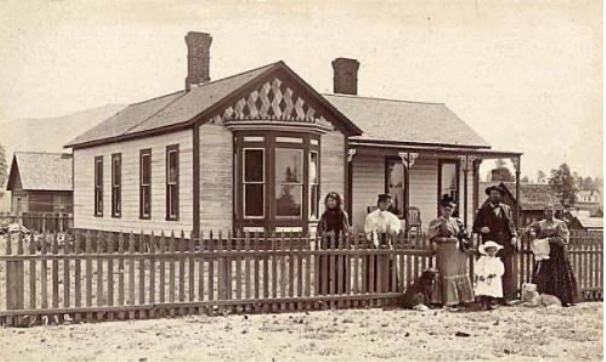

House & Property Histories
— ✦ —

Every home has a past. Every property tells a story. Through careful historical and genealogical research, I bring together the surviving records of a place to reconstruct its history.
Following the unique documentary trail each property has left behind, I trace the history of your home, its owners, or your land using original records. From deeds and maps to newspapers and other surviving documents, every record becomes another piece of your property’s history.
Whether it’s the people who first settled the land, the families who built and occupied it, or the events that shaped its history, I uncover the stories preserved within the historical record.
From the first recorded deed to the present day, I connect evidence across generations, weaving scattered records into a clear and cohesive account of your property’s history.